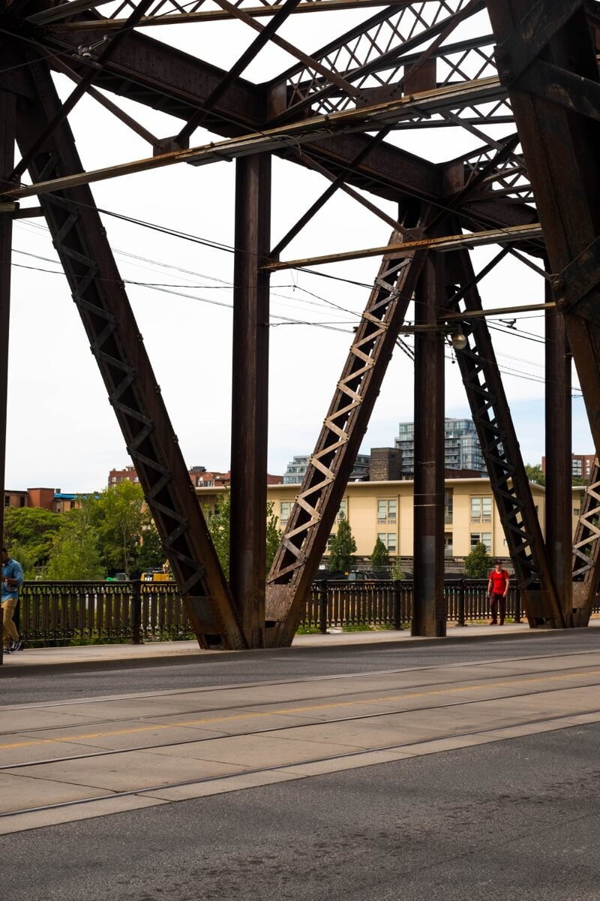
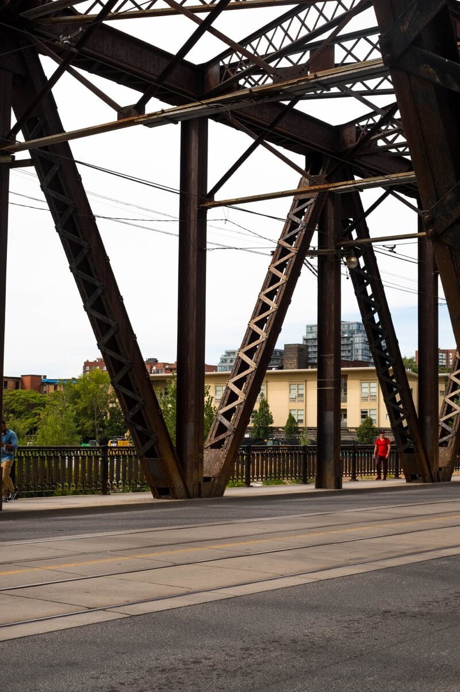

Street photography is super hard and I have so much respect for those who shoot if for a career. For me it’s all about finding beauty in the mundane.
That’s it for now. Explore more of my work below.


 
